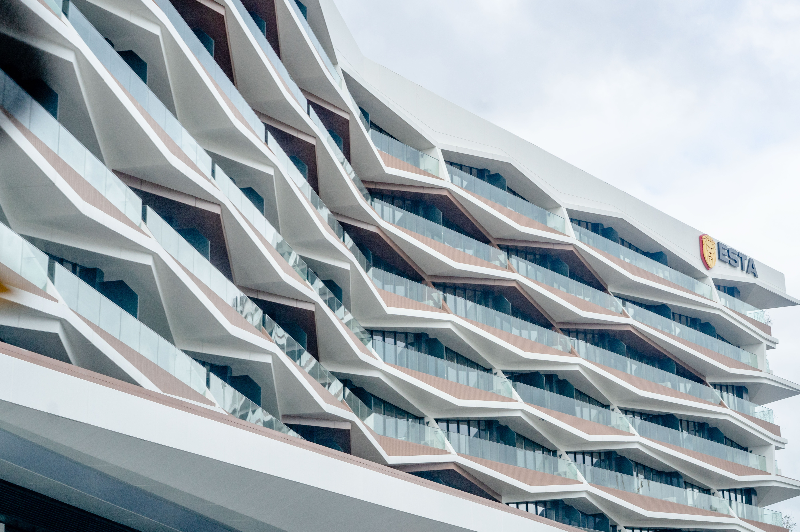

ARVO ME
is a Netherlands architectural firm. The firm was founded in 1993 by anya taylor and her former acquaintance jack brown. They set out to change the architectural landscape of Europe.

"IT'S SAFE TO SAY THAT ARVO IS ALWAYS SURPRISING,EXPERIMENTING AND PUSHING THE BOUNDARIES.INTERESTING ARCHITECTURE NECESSARILY TRANSCENDS IT'S DISCIPLINE IN ORDER TO REALIZE A DESIGN VISION-CULTURAL,COMMERCIAL, LUXURY OR EDUCATIONAL."
ARCHITECTURE
WE CREATE HAPPY AND ADVENTUROUS PLACES
innovative, social, green, realistic and remarkable Architecture for a changing world.
URBANISM
SMART & LIVABLE CITIES
The city of the future is here. we believe in livable cities, in smart, inclusive , and green urban life.
HOUSING
YOUR HOME
Homes are the essence of architecture. we love to provide homes for everyone,everywhere
THE PRODUCTS OF ARVO'S UNIQUE APPROACH TO DESIGN VARY, RANGING FROM BUILDINGS OF ALL TYPES AND SIZES, TO URBAN PLANS AND VISIONS, NUMEROUS PUBLICATIONS, INSTALLATIONS AND EXHIBITIONS
